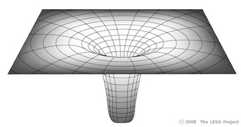

จุดจบของดาวฤกษ์
ดาวพ้นจากลำดับหลัก
เมื่อไฮโดรเจนที่แก่นของดาวหลอมรวมเป็นฮีเลียมหมด ปฏิกิริยาฟิวชันที่แก่นดาวจะหยุด และเปลือกไฮโดรเจนที่ห่อหุ้มแก่นฮีเลียมจะจุดฟิวชันแทน ดาวจะขยายตัวออก ณ จุดนี้ดาวจะพ้นจากลำดับหลักกลายเป็นดาวยักษ์แดง เปลือกไฮโดรเจนที่หลอมรวมเป็นฮีเลียมจมลงสะสมตัว ทำให้เกิดแรงกดดันให้แก่นฮีเลียมร้อนขึ้นจนกระทั่งอุณหภูมิสูงถึง 100 ล้านเคลวิน ฮีเลียมก็จะจุดฟิวชันหลอมรวมเป็นธาตุหนักอื่นๆ ต่อไป ได้แก่ คาร์บอน และออกซิเจน
เมื่อแก่นฮีเลียมฟิวชัน ดาวที่มีมวลน้อยกว่า 2 - 3 เท่าของดวงอาทิตย์ จะเกิดการระเบิดอย่างฉับพลัน เรียกว่า “ฮีเลียมแฟลช” (Helium Flash) ส่วนดาวที่มีมวลมากกว่า 2 - 3 เท่าของดวงอาทิตย์ จะเกิดการหลอมรวมอย่างค่อยเป็นค่อยไป อุณหภูมิผิวดาวจะสูงขึ้นอีกครั้งหนึ่ง หากพิจารณาแผนภาพ H-R ในภาพที่ 2 จะเห็นว่า เมื่อเกิดการฟิวชันไฮโดรเจน ดาวจะอยู่ในลำดับหลัก หลังจากนั้นก๊าซร้อนบนผิวดาวจะขยายตัวและมีอุณหภูมิต่ำลง พื้นที่ผิวซึ่งมากขึ้นทำให้ดาวมีความสว่างมากขึ้น ดาวจะเคลื่อนตัวเหนือแถบลำดับหลักเล็กน้อย เมื่อดาวเผาผลาญไฮโดรเจนที่แกนหมด ดาวจะก้าวพ้นลำดับหลัก เมื่อเกิดการเผาผลาญเปลือกไฮโดรเจน ดาวจะขยายตัวอย่างรวดเร็วและอุณหภูมิลดต่ำลงกลายเป็นดาวยักษ์แดง กระทั่งดาวยุบตัวลงและเกิดการฟิวชันที่แก่นฮีเลียม ดาวก็จะมีอุณหภูมิสูงขึ้นอีกครั้ง ดาวที่มีมวลมากกว่าดวงอาทิตย์ 9 เท่า จะเปลี่ยนสภาพเป็นดาวยักษ์น้ำเงิน
การจบสิ้นชีวิตของดาวขึ้นอยู่กับมวลเริ่มต้นที่ก่อกำเนิดดาวขึ้นมา ดาวที่มีมวลมากมีช่วงชีวิตสั้นกว่าดาวที่มวลน้อย เนื่องจากปฏิกิริยาฟิวชันที่รุนแรงเผาไหม้เชื้อเพลิงภายในดาวอย่างรวดเร็ว นักดาราศาสตร์จำแนกประเภทจุดจบของดาวฤกษ์ตามที่แสดงในภาพที่ 3 ดังนี้
ดาวที่มีมวลตั้งต้นน้อยกว่า 2 เท่าของดวงอาทิตย์ พ้นลำดับหลักกลายเป็นดาวยักษ์แดง แล้วจบชีวิตเป็นเนบิวลาดาวเคราะห์และดาวแคระขาวคาร์บอน
ดาวที่มีมวลตั้งต้น 2 - 8 เท่าของดวงอาทิตย์ พ้นลำดับหลักกลายเป็นดาวยักษ์แดง แล้วจบชีวิตเป็นเนบิวลาดาวเคราะห์และดาวแคระขาวออกซิเจน
ดาวที่มีมวลตั้งต้นมากกว่า 8 เท่า แต่น้อยกว่า 18 เท่าของดวงอาทิตย์ พ้นลำดับหลักกลายเป็นดาวยักษ์ใหญ่สีแดง แล้วจบชีวิตเป็นซูเปอร์โนวา และดาวนิวตรอน
ดาวที่มีมวลตั้งต้นมากกว่า 18 เท่า ของดวงอาทิตย์ พ้นลำดับหลักกลายเป็นดาวยักษ์ใหญ่สีแดง แล้วจบชีวิตเป็นซูเปอร์โนวา และหลุมดำ
ดาวนิวตรอน
ปี ค.ศ.1024 นักปราชญ์ชาวจีนได้บันทึกว่า ที่ตำแหน่งกลุ่มดาววัว มีดาวสว่างเกิดขึ้นมองเห็นได้แม้ในเวลากลางวันนานถึง 23 วัน แล้วจางหายไป นักดาราศาสตร์ในยุคปัจจุบันใช้กล้องโทรทรรศน์ส่องพบวัตถุนี้และเรียกว่า “เนบิวลาปู” (Crab Nebula) เพราะว่ารูปร่างของกลุ่มแก๊สคล้ายกับกระดองปู ภาพถ่ายจากกล้องโทรทรรศน์วิทยุ VLT แสดงให้เห็นว่า กลุ่มแก๊สกำลังขยายตัวออกด้วยความรุนแรง กล้องโทรทรรศน์เอ็กซ์เรย์พบว่า ใจกลางของเนบิวลาเป็นดาวนิวตรอนหมุนรอบตัวเองด้วยความเร็ว 30 รอบต่อวินาที มีแก๊สร้อนพุ่งออกมาในแนวตั้งฉากกับจานรวมมวลด้วยความเร็วสูง กล้องโทรทรรศน์อัลตราไวโอเล็ตตรวจพบแก๊สร้อนที่เป็นองค์ประกอบของเนบิวลาแผ่รังสี UV ออกมาด้วย กล้องโทรทรรศน์อินฟราเรดตรวจพบฝุ่นและแก๊สเย็นซึ่งเป็นโครงสร้างของเนบิวลา

กล้องโทรทรรศน์วิทยุตรวจพบสนามแม่เหล็กที่มีความเข้มสูงของดาวนิวตรอน ซึ่งทำให้เกิดการแผ่รังสีเป็นลำออกจากขั้วแม่เหล็กทั้งสอง เนื่องจากดาวนิวตรอนหมุนรอบตัวเองด้วยความเร็วสูงมาก ลำรังสีซึ่งแผ่ออกมาจะกวาดไปโดยรอบอย่างรวดเร็ว และเมื่อลำรังสีผ่านเข้ามาตรงโลกจะเกิดปรากฎการณ์ซึ่งเรียกว่า “พัลซาร์” (Pulsar ย่อมาจาก Pulsating Radio Source ซึ่งแปลว่า แหล่งกำเนิดคาบของคลื่นวิทยุ)
ดาวนิวตรอน (Neutron star) มีขนาดเล็กมาก มีเส้นผ่านศูนย์กลางประมาณ 10 - 20 กิโลเมตร แต่มีความหนาแน่นสูงมาก เนื้อสารของดาวนิวตรอน 1 ช้อนชา มีมวลถึง 120 ล้านตัน (อะตอมของสสารบนโลกมีที่ว่าง 99.999% ของอะตอม แต่ดาวนิวตรอนไม่มีที่ว่างอยู่เลยจึงสามารถบีบอัดมวลมหาศาลให้มีปริมาตรเล็กได้) อะตอมของดาวนิวตรอนไม่มีช่องว่างระหว่างโปรตรอน (ประจุบวก) และอิเล็กตรอน (ประจุลบ) ทำให้ประจุบวกและประจุลบอยู่ชิดติดกัน จึงเป็นที่มาของคำว่า "นิวตรอน" (ประจุกลาง) อย่างไรก็ตามดาวนิวตรอนมีลิมิตมวลไม่เกิน 3 เท่าของดวงอาทิตย์ ถ้าหากมีมวลมากกว่านี้ แรงโน้มถ่วงของดาวจะเอาชนะแรงดันดีเจนเนอเรซีของดาวนิวตรอน ทำให้แก่นดาวยุบตัวเป็นหลุมดำ ซึ่งมีสนามแรงโน้มถ่วงสูง มีอัตราความเร่งสามารถเอาชนะความเร็วแสง แม้แต่แสงยังไม่สามารถหนีหลุดออกมาได้
หมายเหตุ: เนบิวลาปูไม่ใช่กลุ่มแก๊สที่กำลังรวมตัวเกิดเป็นดาวฤกษ์ดวงใหม่ดังเช่น เนบิวลาสว่าง นบิวลาสะท้อนแสง และเนบิวลามืด แต่เนบิวลาปูเป็นกลุ่มแก๊สซึ่งเกิดจากการระเบิด เรียกว่า “ซากซูเปอร์โนวา” (Supernova Remnant) การระเบิดของซูเปอร์โนวาทำให้เกิดธาตุหนักกว่าเหล็ก (เลขอะตอม >26) นักดาราศาสตร์เชื่อว่า บริเวณระบบสุริยะของเราเคยมีการระเบิดของซูเปอร์โนวา โลกของเราจึงมีธาตุหนักหลายชนิด เช่น โลหะหนัก เงิน ทอง ทองคำขาว พลูโตเนียม นอกจากนั้นนักดาราศาสตร์ยังเชื่อกันว่า การระเบิดของซูเปอร์โนวา ทำให้เกิดปฏิกริยาซึ่งกระตุ้นกลุ่มแก๊สในเนบิวลาให้ยุบตัวลงเป็นดาวเกิดใหม่ หากปราศจากซูเปอร์โนวาแล้ว การเกิดดาวฤกษ์ดวงใหม่คงเป็นไปได้ยาก
หลุมดำ
ปี ค.ศ.1905 อัลเบิร์ต ไอน์สไตน์ (Albert Einstein) นักดาราศาสตร์ชาวยิว ประกาศทฤษฎีสัมพัทธภาพพิเศษ (Special Relativity) ว่า แสงเดินทางในอวกาศด้วยความเร็วคงที่ด้วยความเร็ว 3 x 108 เมตร/วินาที และไม่ขึ้นอยู่กับทิศทางการเคลื่อนที่ของผู้สังเกตการณ์ ขณะที่สังคมในยุคนั้นถือว่า ความเร็ว = ระยะทาง/เวลา ไอสไตน์กล่าวว่า ความเร็วแสงคงที่ แต่เวลาและระยะทางยืดหดได้ ทั้งนี้ขึ้นอยู่กับความเร็วของผู้สังเกตการณ์ ถ้าผู้สังเกตการณ์เดินทางเข้าใกล้ความเร็วแสง ระยะทางจะหดสั้น กาลเวลาจะช้าลง
แม้ว่าทฤษฎีสัมพัทธภาพพิเศษของไอน์สไตน์ ฟังดูไม่น่าเชื่อ แต่ทฤษฎีนี้ก็ถูกพิสูจน์แล้วว่า เวลาในยานอวกาศเดินช้ากว่าเวลาบนโลก อนุภาคในอวกาศมีอายุขัยยาวนานกว่าอนุภาคบนโลก ปี ค.ศ.1917 ไอน์สไตน์ นำเสนอทฤษฎีสัมพัทธภาพทั่วไป (General Relativity) ว่า อวกาศประกอบด้วย 4 มิติ คือ อวกาศและกาลเวลา (Space-time) มวลทำให้อวกาศโค้ง ดาวที่มีมวลมากจะฉุดรั้งให้อวกาศโค้งและกาลเวลายืดออกไป
ไอน์สไตน์อธิบายว่า ดาวเคราะห์ทั้งหลายโคจรรอบดวงอาทิตย์เป็นเพราะว่าอวกาศรอบๆ ดวงอาทิตย์โค้ง นักดาราศาสตร์ในยุคก่อนนั้นแปลกใจว่า อะไรเป็นสาเหตุให้วงโคจรของดาวพุธรอบดวงอาทิตย์แกว่ง ขณะที่นักวิทยาศาสตร์ในยุคนั้นตั้งข้อสันนิษฐานว่า มีดาวเคราะห์ที่มีนามสมมติว่า "วัลแคน" (Valcan) โคจรรอบดวงอาทิตย์ใกล้กว่าดาวพุธ เรามองไม่เห็นวัลแคนเพราะแสงสว่างจากดวงอาทิตย์รบกวน แต่แรงโน้มถ่วงของวัลแคนรบกวนเส้นทางโคจรของวัลแคน ไอน์สไตน์แก้ข้อสมมติฐานนี้โดยเสนอว่า ดาวเคราะห์วัลแคนไม่มีอยู่จริง เราสังเกตเห็นว่า วงโคจรของดาวพุธแกว่งเป็นเพราะว่า ดาวพุธเคลื่อนที่รอบดวงอาทิตย์เป็นวงโคจรรูปรี ซึ่งทาบอยู่บนอวกาศโค้ง หากใช้ทฤษฎีสัมพัทธภาพทั่วไปแทนค่าในสมการวงโคจรของดาวพุธ ก็จะทราบตำแหน่งที่แท้จริงของดาวพุธ
ไอน์สไตน์อธิบายว่า สภาพภูมิศาสตร์ของอวกาศไม่ใช่ราบเรียบเป็นเส้นตรง หรือเป็นทรงกลมที่สมบูรณ์ หากแต่คดโค้งไม่สม่ำเสมอ ขึ้นอยู่กับมวลในแต่ละตำแหน่งของจักรวาล ซึ่งจะฉุดให้กาลเวลายืดหดไปด้วย แสงเดินทางเป็นเส้นตรงเมื่ออวกาศเป็นแผ่นระนาบ แต่ถ้าอวกาศโค้ง แสงก็จะเดินทางเป็นเส้นโค้งด้วย ดาวฤกษ์ที่มีมวลเท่าดวงอาทิตย์ทำให้อวกาศโค้งเพียงเล็กน้อย แต่ดาวนิวตรอนทำให้อวกาศโค้งมาก แสงที่เดินทางออกจากดาวนิวตรอนจึงเป็นเดินทางเป็นเส้นโค้ง และแสงที่เดินทางออกจากหลุมดำ จะตกกลับลงมาที่เดิม ไม่สามารถหลุดพ้นออกไปได้
เมื่อดาวฤกษ์ที่มีมวลตั้งต้นมากกว่า 18 เท่าของมวลดวงอาทิตย์หมดสิ้นอายุขัย แก่นของมันจะยุบตัวลงอย่างรวดเร็วและฉุดให้อวกาศโค้งไปด้วย กาลเวลาจะช้าลง นักวิทยาศาสตร์เรียกภาวะเช่นนี้ว่า "หลุมดำ" เพราะว่าหลุมดำไม่แผ่รังสีใดๆ ออกมา
แม้ว่าหลุมดำจะไม่สามารถแผ่รังสีใดๆ ออกมา แต่นักดาราศาสตร์ทราบตำแหน่งของหลุมดำ ได้จากการสังเกตการแผ่คลื่นแม่เหล็กไฟฟ้าของจานแก๊สรวมมวลรอบๆ หลุมดำ ยกตัวอย่างเช่น ระบบดาวคู่ Cygnus X-1 ในกลุ่มดาวหงส์ ดาวดวงหนึ่งในระบบดาวคู่ยุบตัวลงเป็นหลุมดำ แล้วดึงดูดแก๊สจากดาวคู่เข้ามาหมุนวนเป็นจานรวมมวล แล้วหล่นเข้าไปในหลุมดำ แก๊สในจานรวมมวลอัดแน่นกันจนเกิดอุณหภูมิสุงและแผ่รังสีเอ็กซ์และคลื่นวิทยุบางความถี่ออกมา นักดาราศาสตร์จึงทราบว่า บริเวณนั้นมีหลุมดำอยู่
ยิ่งเราเข้าใกล้หลุมดำ ความโค้งของอวกาศจะทำให้เราเคลื่อนที่ด้วยความเร็วเข้าใกล้แสง และกาลเวลาจะช้าลง (ทฤษฎีสัมพัทธ์ภาพพิเศษของไอน์สไตน์) ขอบของหลุมดำเรียกว่า “เส้นขอบเหตุการณ์” (Event Horizon) ถัดจากเส้นขอบเหตุการณ์เข้าไปยังจุดศูนย์กลาง (Singularity) กาลเวลาจะหยุดนิ่ง การเดินทางออกจากหลุมดำ จำเป็นต้องใช้ความเร็วหลุดพ้นซึ่งมีค่ามากกว่าความเร็วแสง ซึ่งนั่นหมายความว่า ไม่มีสิ่งใดหลุดพ้นออกมาจากหลุมดำได้ เพราะไม่มีอะไรเคลื่อนที่เร็วกว่าแสง (ทฤษฎีสัมพัทธภาพทั่วไปของไอน์สไตน์ อธิบายว่า สสารและพลังงานคือสิ่งเดียวกัน สสารคือพลังงานที่พักอยู่ แสงคือสสารที่เคลื่อนที่เร็วที่สุดในจักรวาล)
หลุมดำที่เกิดขึ้นจากดาวฤกษ์ยุบตัวมีขนาดเล็ก (ดาวแคระขาวมีขนาดใกล้เคียงกับโลก ดาวนิวตรอนมีขนาดประมาณ 10 กิโลเมตร หลุมดำอาจมีขนาดเล็กกว่า 1 กิโลเมตร) อย่างไรก็ตามหลุมดำที่ศูนย์กลางของกาแล็กซีมีขนาดใหญ่หลายปีแสง เนื่องจากกาแล็กซีเป็นศูนย์กลางของระบบดาวฤกษ์จำนวนล้านล้านดวง กาแล็กซีมีมวลมหาศาล ใจกลางของกาแล็กซีเป็นศูนย์รวมของแรงโน้มถ่วง ดังนั้นหลุมดำที่ใจกลางของแกแล็กซีจึงมีขนาดใหญ่ตามไปด้วย เป็นรูปถ่ายจากกล้องโทรทรรศน์อวกาศฮับเบิล เผยให้เห็นจานรวมมวลขนาดใหญ่ของกาแล็กซี M87 ซึ่งพ่นแก๊สร้อนออกมาจากหลุมดำ